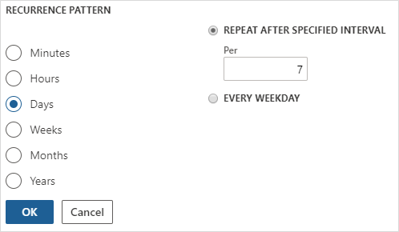

Optimieren Sie die Leistung mit automatischen Bereinigungsaufgaben
Abgang
Microsoft Dynamics 365 Human Resources kann Leistungsprobleme aufweisen, wenn der Verlauf der Stapelverarbeitungsaufträge zu umfangreich wird.
Ursache
Stapelverarbeitungsaufträge, die oft ausgeführt werden, können so umfangreich werden, dass sie sich nicht mehr verwalten lassen. Dieses kann zu Leistungsproblemen führen.
Lösung
Planen Sie eine automatische Aufgabe, um den Verlauf der Stapelverarbeitungsaufträge zu bereinigen. Es wird empfohlen, die Aufgabe wöchentlich auszuführen, Sie müssen jedoch möglicherweise die Bereinigung häufiger ausführen, je nach Größe Ihrer Umgebung. Die folgenden Verfahren enthalten unsere empfohlenen Einstellungen, die Sie Ihren Anforderungen entsprechend ändern können.
Wählen Sie in Human Resources Systemverwaltung aus.
Geben Sie auf der Leiste Suchen Verlauf der Stapelverarbeitungsaufträge bereinigen ein.
In Historienlimit (Tage) geben Sie 30 ein.
Wählen Sie Im Hintergrund ausführen und Wiederholung aus.

Unter Wiederholung definieren legen Sie die Option Startdatum und Startzeit fest, um während der Arbeitszeit oder am Wochenende auszuführen, und wählen Sie dann KEIN ENDDATUM aus.

Wählen Sie unter WIEDERHOLUNGSMUSTER die Option Tage aus und legen Sie NACH DEM ANGEGEBENEN INTERVALL WIEDERHOLEN auf 7 fest.

Wählen Sie OK.
Ändern Sie ggf. weitere Parameter unter Im Hintergrund ausführen und wählen Sie dann OK aus.